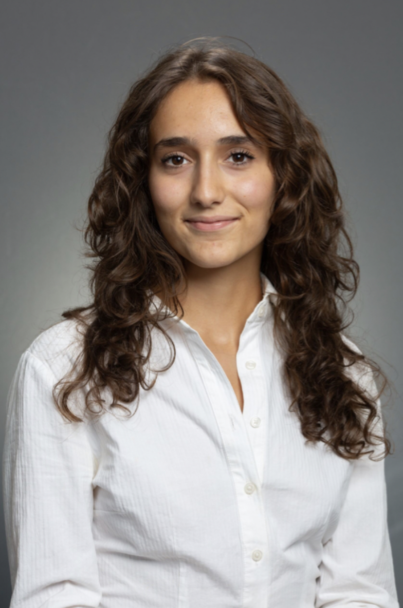

Mechanical Engineer · Astrophysics Minor
Northeastern University · Graduating December 2026
Available January 2027 · Spanish (EU) citizen, eligible to work in the EU and Switzerland
Background

I came to engineering sideways. I was a curious child who gravitated toward philosophy and the big metaphysical questions (though I didn't have words for it yet), which turned into wanting to study space. I was also good at math and physics, and I wanted something practical that still left room to move, so I chose mechanical engineering. I didn't really understand what engineering was until I was truly in it.
What changed me was the way of thinking: break a problem down to what you actually know, then build it back up from there. That habit has spread well beyond the lab and into how I approach most things. I'm drawn to the places where engineering meets physics and art, like detector hardware built to measure particles no one can see, or a lamp whose form comes from a Mudéjar star pattern and a material I had to test my way into. The astrophysics minor is the part of me that never stopped wanting to study space, and it's why I like working inside the physics of an instrument, not only around it.
My best days move between CAD, the workshop, and the test bench. At LineSpect, I was the only mechanical engineer on a submersible microscope. At Lutron Electronics, I designed tooling for a production line. At Northeastern's Aramaki Lab, I build detector hardware for the GRAMS experiment, and this term I lead the actuation system for my capstone team's robotic gripper.
The philosophy never left. In 2025 I started The Art of Inquiry, a podcast where I talk with scientists, engineers, and designers about the judgment and perspective behind their work, the part that rarely makes it into papers. It also runs as an IRB-approved research study on how creative reasoning shapes technical practice, which received a PEAK Experiences Summit Award.
I speak English and Spanish natively, Italian at an intermediate level, and German is next. Away from work I write poetry, swing dance, and look for a rock or blues show in whatever city I'm in.
Work
The only mechanical engineer at an optics startup building a submersible light-sheet microscope for early detection of harmful algal blooms. Designed optical housings and mounts, packaged electronics and wiring into a compact enclosure, built test jigs, and ran optical characterization.
Co-op 2025View details →
Designed precision tooling for the Ketra D2 Downlight assembly line. Tolerance analysis, rapid prototyping in Creo Parametric, and cross-functional design reviews between engineering and production.
Co-op 2024View details →
A bioinspired gripper that combines compliant silicone fingers with motor-driven actuation to hold irregular and delicate objects without damaging them. As actuation lead on a five-person team, I handle motor selection, drive electronics with encoder feedback and a load cell, and the test plan, and I build the parametric CAD and FEA studies of the fingers. Demonstration December 2026. The design is being evaluated for a university patent, so I share it at a high level only.
2026 – In progressBuilt scintillator arrays and a cosmic muon coincidence system whose data is used to characterize the veto system for the GRAMS flight detector. Designed 3D-printed mounting systems for a liquid argon detector, fixed a grounding problem in the readout, and analyzed 1M+ events in Python.
2024 – PresentView details →
Led the mechanical redesign and prototyping of networked mini-COBRA robotic modules for coordinated lunar surface exploration. CAD, 3D printing, assembly, and testing.
Apr 2024 – Dec 2025View details →
A pendant lamp with a 3D-printed PETG lattice skeleton based on an 8-pointed Mudéjar star pattern and a cast agar bioplastic skin. Modeled parametrically in SolidWorks from a single 16-fold repeat unit, as one printable body.
Personal project – In progressView details →
Created an interactive museum exhibit on campus safety using Arduino, C++, and laser-cutting techniques.
CompletedView details →
A podcast about people whose work crosses disciplines. I interview researchers, designers, and thinkers, handling everything from guest outreach to recording, editing, brand design, and distribution.
2025 – PresentVisit website →
Founded a weekly science newsletter presenting research in a non-traditional, curiosity-driven format.
2023 – 2025View details →
Industry work at Lutron Electronics and LineSpect is under NDA. I am happy to discuss scope and my role in an interview.